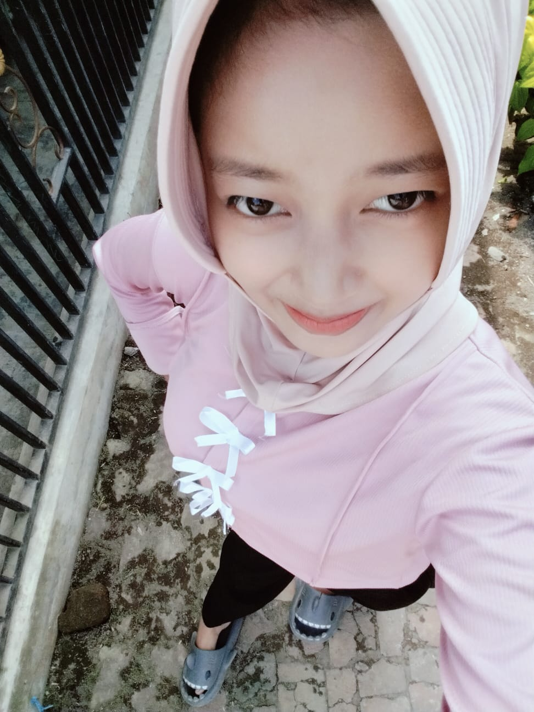

Haloo Semuanyaa!!
Halo semua! Perkenalkan, nama saya Restu Wahyu Mulyani. Saya adalah siswi kelas X BD 2 di jurusan Bisnis Digital. Saya tinggal di Wonorejo dan memiliki hobi healing. Cita-cita saya adalah menjadi orang sukses di masa depan. Terima kasih telah mengunjungi halaman data diri saya!